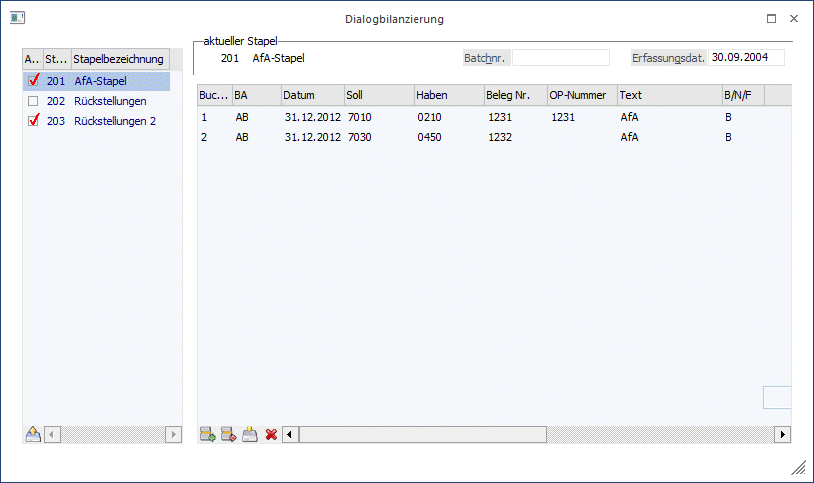
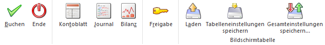
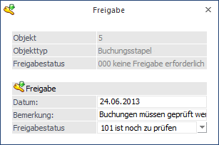
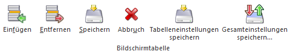

Die Dialogbilanzierung finden Sie im Menüpunkt
1 Buchen
1 Dialogbilanz
In der WinLine haben Sie die Möglichkeit der Dialogbilanzierung. Dialogbilanzierung heißt, dass alle Salden-, Gewinn- und Verlustbewegungen während des Dialogbuchens am Bildschirm angezeigt werden. So können außerhalb der "Echtbuchung” verschiedene Varianten zur Bilanzoptimierung eingegeben werden.
In der Dialogbilanzierung können Buchungen gelöscht, korrigiert und variiert werden. Gleich wie im Stapelbuchen können Buchungsstapel gespeichert werden, um später weiterbearbeitet oder gebucht zu werden. Wenn die Optimierung abgeschlossen ist, kann der Stapel direkt im Fenster Dialogbilanzierung gebucht werden.

In der linken Tabelle werden alle Stapel, die bereits für die Dialogbilanzierung erfasst wurden, angezeigt. Diese Stapel sind durch ihre Stapelnummer gekennzeichnet. Stapel der Dialogbilanzierung können die Nummern 200 bis 299 haben.
Durch Aktivieren der Checkbox vor der Stapelnummer wird der Stapel gekennzeichnet. Dadurch wird der entsprechende Stapel bei den durchgeführten Aktionen mit berücksichtigt.
Buttons

Ø Kontoblatt
Hier wird für jedes Konto, das in einem der markierten Stapel vorkommt, ein Kontoblatt gedruckt. Darin wird der aktuelle Saldo (und die Werte Soll und Haben), die in den Stapeln vorhandenen Buchungen und der sich daraus ergebende Saldo (und die neuen Werte Soll und Haben) angezeigt. Zusätzlich dazu werden wieder, wie im Journal, die Werte Aktiva, Passiva, Aufwand, Ertrag und Gewinn/Verlust angezeigt, die sich aus den markierten Stapeln ergeben würden.
Ø Journal
Durch Anklicken des Journal-Buttons wird ein Journal aller in den markierten Stapel enthaltener Buchungen ausgegeben. Am Ende des Journals werden die Werte Aktiva, Passiva, Aufwand, Ertrag und Gewinn/Verlust angezeigt, die sich durch die markierten Stapel ergeben.
Ø Bilanz
Durch Drücken des Bilanz-Buttons kommen Sie in das Bilanzmenü und können dort jede beliebige Bilanzart auswerten. Beim Bilanzdruck werden die markierten Stapel mitgerechnet und verändern auch das Bilanzergebnis (zumindest am Ausdruck, solange nicht gebucht wird).
Ø Freigabe
Durch Drücken dieses Buttons wird das Freigabefenster geöffnet, um den Freigabestatus eines Buchungsstapels verändern zu können.

Ø Laden
Mittels Klicken auf diesen Button wird der in der linken Tabellenhälfte angewählte Stapel in die Buchungstabelle übergeben, so dass hier die einzelnen Buchungssätze editiert werden können. Alternativ genügt ein Doppelklick auf den entsprechenden Stapel, um ihn zu laden.
Ø Buchen
Nach Drücken des Buchen-Buttons werden alle markierten Buchungsstapel in die Buchhaltung übernommen und verbucht.
Dazu können noch einzelne Stapel verändert werden. Markieren Sie dazu in der Tabelle links den gewünschten Stapel, und klicken Sie dann den "Laden"-Button. In der Tabelle werden alle Buchungen des Stapels angezeigt.
Innerhalb des Stapels können folgende Aktionen durchgeführt werden:
Tabellenbuttons

Ø Einfügen
Durch Anklicken des Einfügen-Buttons können neue Buchungszeilen in die Tabelle eingefügt werden.
Ø Entfernen
Durch Anklicken des Entfernen-Buttons kann eine bestehende Buchungszeile gelöscht werden.
Ø Speichern
Durch Anklicken des Speichern-Buttons kann ein bearbeiteter Stapel für weitere Verwendungen gespeichert werden.
Ø Abbruch
Durch Anklicken dieses Buttons wird der Inhalt der Buchungstabelle gelöscht. Dadurch wird aber nicht der gerade aktive Stapel gelöscht. Dialogbilanzierungsstapel können nur im Menüpunkt Buchen/Buchen/Dialog Stapel durch Anklicken des Laden-Buttons gelöscht werden (siehe auch Kapitel Buchungen laden).
Ø Tabelleneinstellungen speichern
Die Spalten einer Tabelle können grundsätzlich an beliebige Positionen verschoben, bzw. in der Breite entsprechend angepasst werden. Durch Anwahl des Buttons "Tabelleneinstellungen speichern" werden die Einstellungen benutzerspezifisch gespeichert und bei dem nächsten Aufruf des Programmpunktes wieder vorgeschlagen.
Ø Gesamteinstellungen speichern
Im Gegensatz zu "Tabelleneinstellungen speichern" können mit "Gesamteinstellungen speichern" mehrere Tabellenaufbauten gespeichert und nach Wunsch geladen werden. Zusätzlich werden Sonderfunktionen der Tabelle (z.B. "Spalte gruppieren") ebenfalls bei der Speicherung bedacht.
Die Felder der Buchungstabelle
Grundsätzlich entsprechen die Felder der Buchungstabelle dem Buchen Dialog Stapel. Folgende Besonderheiten sind zu beachten:
Ø Buchungsart
In der Dialogbilanzierung können nur Abschlussbuchungen - Buchungscode AB - erfasst werden. Somit werden auch alle erfassten Buchungen in die Abschlussperiode gebucht.
Ø Steuer
In der Abschlussperiode wird keine Steuer gerechnet - egal, ob die angesprochenen Konten Steuerkonten sind oder nicht.